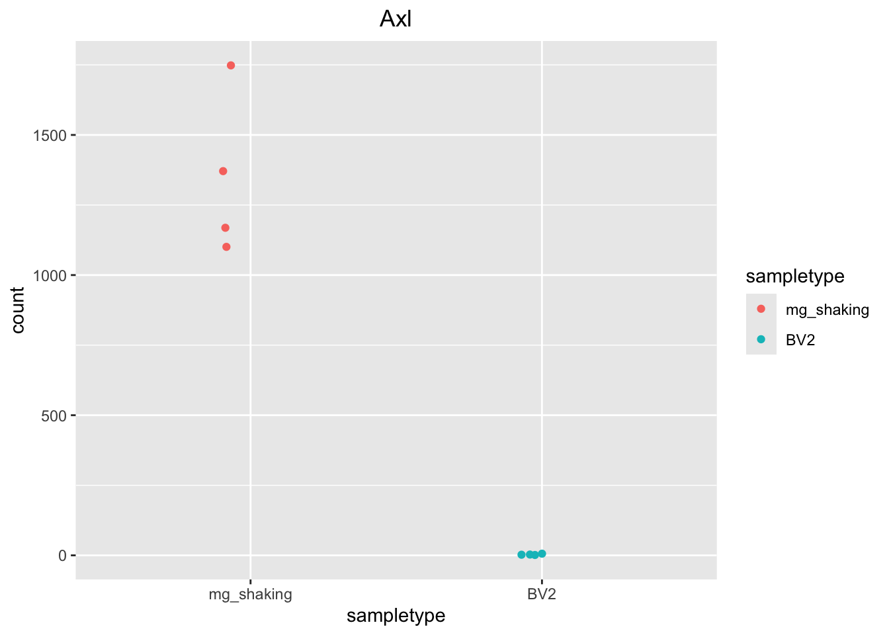
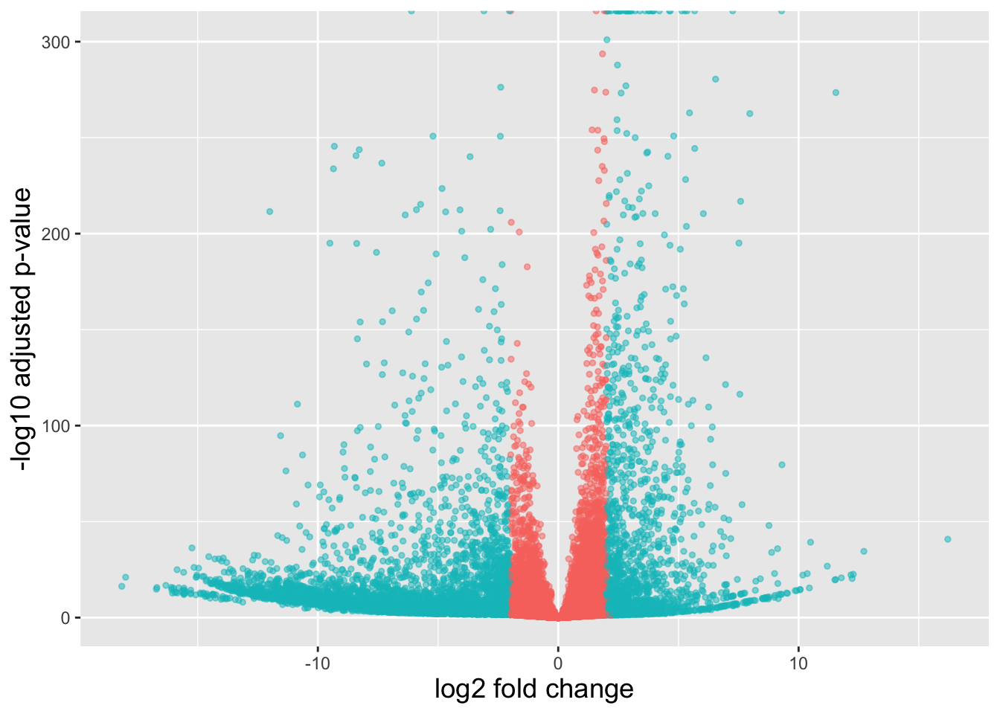

Welcome to Bioconductor
Vignettes contain introductory material; view with
'browseVignettes()'. To cite Bioconductor, see
'citation("Biobase")', and for packages 'citation("pkgname")'.
Attaching package: 'Biobase'
The following object is masked from 'package:MatrixGenerics':
rowMedians
The following objects are masked from 'package:matrixStats':
anyMissing, rowMedians
library(tidyverse)
Warning: package 'ggplot2' was built under R version 4.4.3
Warning: package 'tidyr' was built under R version 4.4.3
Warning: package 'readr' was built under R version 4.4.3
# DESeq2 creates a matrix when you use the counts() function## First convert normalized_counts to a data frame and transfer the row names to a new column called "gene"normalized_counts <-counts(dds, normalized=T) %>%data.frame() %>%rownames_to_column(var="gene")
# Next, merge together (ensembl IDs) the normalized counts data frame with a subset of the annotations in the tx2gene data frame (only the columns for ensembl gene IDs and gene symbols)ens2gene <- tx2gene %>% dplyr::select(gene_id, gene_name) %>% dplyr::distinct()head(ens2gene)
## This will bring in a column of gene symbolsnormalized_counts <-merge(normalized_counts, ens2gene, by.x="gene", by.y="gene_id")head(normalized_counts)
# Find the Ensembl IDens2gene[ens2gene$gene_name =="Axl", "gene_id"]
[1] "ENSMUSG00000002602"
# Save plotcounts to a data frame objectd_axl <-plotCounts(dds, gene="ENSMUSG00000002602", intgroup="sampletype", returnData=TRUE)# Plot the normalized countsggplot(d_axl, aes(x = sampletype, y = count, color = sampletype)) +geom_point(position=position_jitter(w =0.1,h =0)) +# geom_text_repel(aes(label = rownames(d_axl))) + # theme_bw() +ggtitle("Axl") +theme(plot.title =element_text(hjust =0.5))

# the code block above only creates the plot in the R session, but doesn't save it to a file. To save it, we need to assign the plot to an object and then use ggsave() to export it.# Create the plot objectp_axl <-ggplot(d_axl, aes(x = sampletype, y = count, color = sampletype)) +geom_point(position=position_jitter(w =0.1,h =0)) +ggtitle("Axl") +theme(plot.title =element_text(hjust =0.5))# Export to PNG and SVGggsave("plots/plot12_axl_norm_counts.png", plot = p_axl, width =5, height =4)ggsave("plots/plot12_axl_norm_counts.svg", plot = p_axl, width =5, height =4)
### Set a color paletteheat_colors <-brewer.pal(6, "YlOrRd")### Run pheatmap using the metadata data frame for the annotationpheatmap(norm_sig_tb[2:9], color = heat_colors, cluster_rows = T, show_rownames = F,annotation = meta, border_color =NA, fontsize =10, scale ="row", # fontsize_row = 10, # height = 20 )
Warning: Removed 35824 rows containing missing values or values outside the scale range
(`geom_point()`).

## Add all the gene symbols as a columnres_table_shrunken_label_gene_tb <-bind_cols(res_table_shrunken_label_tb, symbol=ens2gene$gene_name[match(res_table_shrunken_label_tb$gene, ens2gene$gene_id)] )head(res_table_shrunken_label_gene_tb)
## Create an empty column to indicate which genes to labelres_table_shrunken_label_gene_tb <- res_table_shrunken_label_gene_tb %>% dplyr::mutate(genelabels ="")head(res_table_shrunken_label_gene_tb)
# check from which gene the padj values are not 0# View(res_table_shrunken_label_gene_tb)
## Populate the genelabels column with contents of the gene_name columnres_table_shrunken_label_gene_tb$genelabels[1:100] <-as.character(res_table_shrunken_label_gene_tb$symbol[1:100])head(res_table_shrunken_label_gene_tb)